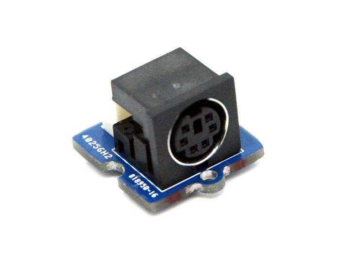

The PS/2 Adapter enables you to connect a PS2 device to the Arduino/Seeeduino mainboards. With the help of PS2Keyboard/PS2MouseNlibrary, you can create the bridge between these PS2 device and Arduino/Seeeduino.
Model: COM14048P

| Item | Min | Typical | Max | Unit |
|---|---|---|---|---|
| Voltage | 4.75 | 5.0 | 5.25 | V |
| Current | 100 | mA | ||
| Communication Mode | PS/2 Communication Protocol | / | ||
| Clock Frequency | 10 | 15 | 33 | KHZ |
The PS/2 connector is a 6-pin Mini-DIN connector used for connecting keyboard and mouse to a PC compatible computer system.The PS/2 designs on keyboard and mouse interfaces are electrically similar and employ the same communication protocol. Today, this connector has been replaced by USB, but as Arduino/Seeeduino, it is also a good choice to use the PS/2 connector as it is more convenient and cheaper when you need a mouse or keyboard.
A PS/2 connector has 6 pins as you can see from the following diagram. Pin 1 and pin 6 are not connected. Pin 3 is for ground, and pin 4 is for power. The other 2 pins are for clock and data.
| Pin | Name | Function | Correspond to the Grove Interface |
|---|---|---|---|
| 1 | +DATA | Data | DATA |
| 2 | NC | Reserved | - |
| 3 | GND | GND Line | GND |
| 4 | Vcc | +5DCV | VCC |
| 5 | +CLK | Clock frequency | CLK |
| 6 | NC | Reserved | - |
1. Plug the PS/2 mouse or keyboard to the Grove-PS/2 Adapter, and then connect Grove to the D5/D6 of Grove - Base Shield. You can change the digital port as you like. But, don't forget to change the port number in the definition of the demo code at the same time.
Note: Pin 5 is the mouse data pin, pin 6 is the clock pin.
2. Plug the Base Shield into Arduino/Seeeduino and connect Arduino/Seeeduino to PC via a USB cable.
3. Download PS2 Adapter library, Unzip and put them in the libraries file of Arduino IDE by the path: ..\arduino-1.0\libraries.
4. Restart the Arduino IDE, open one of the demo codes, for example ps2_mouse directly by the path:File -> Example ->PS2_Adapter->ps2_kbd.
/*
* an Arduino sketch to interface with a ps/2 keyboard.
* Also uses serial protocol to talk back to the host
* and report what it finds. Used the ps2 library.
*/
#include <ps2.h>
/*
* Pin 5 is the ps2 data pin, pin 6 is the clock pin
* Feel free to use whatever pins are convenient.
*/
PS2 kbd(6, 5);
void kbd_init()
{
char ack;
kbd.write(0xff); // send reset code
ack = kbd.read(); // byte, kbd does self test
ack = kbd.read(); // another ack when self test is done
}
void setup()
{
Serial.begin(9600);
kbd_init();
}
/*
* get a keycode from the kbd and report it back to the
* host via the serial line.
*/
void loop()
{
unsigned char code;
for (;;) { /* ever */
/* read a keycode */
code = kbd.read();
/* send the data back up */
Serial.println(code, HEX);
// delay(20); /* twiddle */
}
}
Please click here if you do not know how to upload.
After uploading the firmware to the MCU,you can check the status via a Serial Monitor(9600 baudrate):
X ,Y output value changes correspondingly while the mouse move around.
If you have questions or other better design ideas, you can go to our forum or wish to discuss.
Copyright (c) 2008-2016 Seeed Development Limited (www.seeedstudio.com / www.seeed.cc)